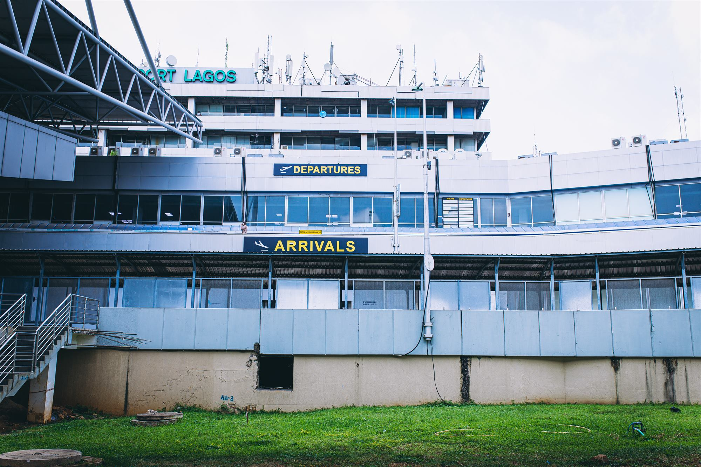

Chapter 0101
The vision
In 2020 the Authority set out a simple brief: build a terminal that could carry Lagos for the next fifty years. This chapter covers the decision, the people who made it, and what they promised the travelling public.
Read the full chapter